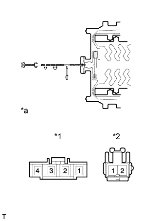
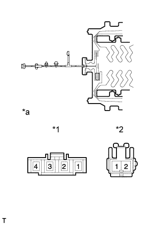

ПОДОГРЕВАТЕЛЬ ПОДУШКИ ПЕРЕДНЕГО СИДЕНЬЯ (для сидений с функцией облегчения посадки "Walk In") > ПРОВЕРКА |
| 1. ПРОВЕРЬТЕ ПОДОГРЕВАТЕЛЬ ПОДУШКИ ЛЕВОГО ПЕРЕДНЕГО СИДЕНЬЯ |
|  |
Проверьте подогреватель подушки сиденья.
Измерьте сопротивление в соответствии со значениями, приведенными в таблице ниже.
| Контакты для подключения диагностического прибора | Условие | Заданные условия |
| A-1 - B-1 | Температура подогревателя подушки сиденья 20°C (68°F) | 3,4 - 4,2 Ом |
| A-4 - B-2 | ||
| A-1 - A-4 | ||
| A-2 - A-3 | 8 - 12 кОм |
| *1 | Разъем A |
| *2 | Разъем B |
| *a | Устройство с неподсоединенным жгутом проводов (подогреватель подушки переднего сиденья) |
| 2. ПРОВЕРЬТЕ ПОДОГРЕВАТЕЛЬ ПОДУШКИ ПРАВОГО ПЕРЕДНЕГО СИДЕНЬЯ В СБОРЕ |
|  |
Проверьте подогреватель подушки сиденья.
Измерьте сопротивление в соответствии со значениями, приведенными в таблице ниже.
| Контакты для подключения диагностического прибора | Условие | Заданные условия |
| A-1 - B-1 | Температура подогревателя подушки сиденья 20°C (68°F) | 3,4 - 4,2 Ом |
| A-4 - B-2 | ||
| A-1 - A-4 | ||
| A-2 - A-3 | 8 - 12 кОм |
| *1 | Разъем A |
| *2 | Разъем B |
| *a | Устройство с неподсоединенным жгутом проводов (подогреватель подушки переднего сиденья) |